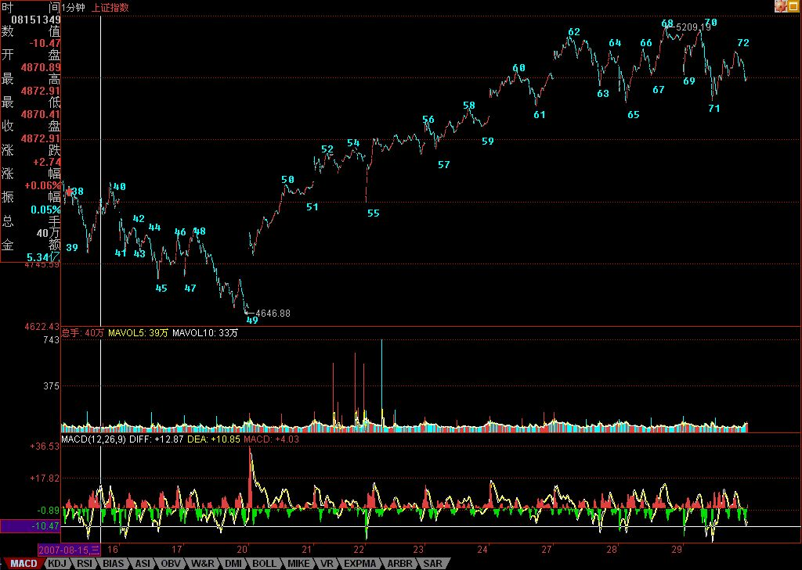

(2007-08-28 08:41:11)
政策性风险，属于非系统风险，本质上是不可准确预测的，只能进行有效的相应防范。
首先，中国政策性风险将在长时间内存在，这是由目前中国资本市场的现实环境所决定的。一个成熟的资本市场，应该是重监管、轻调控，而目前中国的资本市场，至少将在很长时间内，监管和调控都至少是同等重的，甚至，在一些特定的时期，调控将成为最重要的方向。这是客观现实，是由中国经济目前的发展阶段所决定的，其实并不是任何人故意要这样的，所以，任何对这的指责，其实都是有毛病的。
调控，有硬调控与软调控两种。像发社论、讲话、严查之类的，就是明显的硬调控，这种调控方式是否永远不再发生，这谁都不敢保证；至于软调控，就是调控中不直接以资本价格为最直接的目的，而是结合着更多大的方面考虑，政策上有着温和和连续的特征。
当然，站在调控的角度，如果软调控不得力，那么硬调控成为唯一选择的时候，这其实不是调控者的悲哀，而是市场的悲哀，当市场的疯狂足以毁掉市场时，硬调控也是不得以为之。这方面，也要对调控者有足够的理解。
有一种很错误的说法，就是中国的调控只调控上涨，不调控下跌，其实，站在历史实证的角度，这种说法是没有事实根据的。因为，实际上，调控下跌的情况一点都不少，最著名的，就是1994年的325点，那三大政策的缺口，现在还在那里，这难道不是对过分下跌的调控吗？只不过，那是一次最成功的调控，而对下跌的调控，或者说是救市，经常都很失败，这只能说明调控的水平需要在实践中不断提高。
必须旗帜鲜明地反对这样的观点，就是调控者都是坏蛋，散户都是受害者，机构都是串在一起和调控者一起算计散户的。这不过是一些市场的失败者或别有用心者的无耻谰言，根本没有任何事实的根据，纯粹出于自我想象。
一个政策的出台，决不是任何一个人拍脑袋就可以决定的。任何一个体制下，只要是一个体制，就有均衡，那种个人任意超越体制的事情，已经越来越没有发生的可能。而且，散户、机构都不是一个抽象的名词，企图用抽象的名词掩盖一个个现实的实体而达到互相斗的结果，不过是某些运动逻辑的僵尸版。
其次，必须要明确，政策只是一个分力，政策不可能单独去改变一个长期性的走势。例如，就算现在有一个硬调控使得中短期走势出现大的转折，但最终也改变不了大牛市的最终方向。政策只有中短期的力量，而没有长期的力量，这点，即使对经济也是一样的。经济的发展，由经济的历史趋势所决定。中国经济之所以有如此表现，归根结底，就是因为中国经济处于这样的历史发展阶段，任何国家在这样的阶段，都会有类似的发展。但并不是说政策一无所用，一个好的政策，是促进、延长相应的历史发展进程，是一个好的分力。
所以，政策是一个分力，是作用时间和能量不是无限的，而且，政策也是根据现实情况而来的，任何政策，都有其边界，一旦超越其边界，新的政策就要产生，就会有新的分力产生。而且政策分力，即使在同一政策维持中，也有着实际作用的变化。一个政策，5000点和1000点，效果显示不可能一样。
明白了政策的特点，对政策，就没必要如洪水猛兽，以下几点是可以注意的：
一、一个最终结果决定于价格与价值的相关关系。当市场进入低估阶段，就要更注意向多政策的影响，反之，在市场的泡沫阶段，就要更注意向空调控的影响。
二、最终的赢利，都在于个股，一个具有长线价值的个股，是抵御一切中短分力的最终基础，因此，个股对应企业的好坏与成长性等，是一个基本的底线，只要这底线能不被破坏，那么，一切都不过是过眼云烟，而且，中短的波动，反而提供了长期介入的买点。
三、注意仓位的控制。现在透支已经不流行，但借贷炒股还是不少见。这是绝对不允许的，把资本市场当赌场的，永远也入不了资本市场的门。在进入泡沫化阶段后，应该坚持只战略性持有，不再战略性买入的根本原则，这样，任何的中短波动，都有足够的区间去反应。
四、养成好的操作习惯。本ID反复说了，只有成本为0的，才是安全的，这大概是彻底逃避市场风险的唯一办法。
五、贪婪与恐惧，同样都是制造失败的祸首，如果你保持好的仓位，有足够的应对资金以及低成本，那么，就让市场的风把你送到足够远的地方。你可以对政策保持警觉，但没必要对政策如惊弓之鸟，天天自己吓自己。
六、不要企望所有人都能在硬调控出台前提早一天跑掉。可以明确地说，现在政策的出台的保密程度已经和一切大为不同，很多政策的出台，都是十分高效保密的，当然，一定范围内的预先，那肯定是有的，但这种范围已经越来越小，而且，经常能够反应的时间也越来越小，对于大资金来说，那点时间，基本无效。本ID可以开诚布公地说，现在政策的公平性已经越来越高，有能力预先知道的，资金量小不了，因而也没足够的时间去全部兑现，这在以前，有长长的时间去组织大规模撤退，那决不是一回事了。
七、必要的对冲准备，例如权证等，最近，认沽热销，也和一些资金的对冲预期有关。
八、一旦政策硬调控出现，则要在一切可能的机会出逃，在历史上，任何硬调控的出现，后面即使调整空间不大，时间也少不了。
九、关键还是要在上涨时赚到足够的利润，如果你已经N的平方倍了，即使用一个10-20%地去留给这飘忽不定、神经叨叨的非系统风险，那还不是天经地义的事情？成为市场的最终赢家，和是否提前一天逃掉毫无关系，资本市场，不是光靠这种奇点游戏就能成的。心态放平稳点，关键是反应，而不是神经叨叨的预测。
2019-07-07
2019-07-16
2019-07-23
2019-07-31
2019-08-11
2019-09-03
(2007-08-28 16:10:20)
今天的市场，在技术上十分简单，就是本ID昨天所说的那1分钟中枢的震荡，而要形成新的上攻，就要看是否形成该1分钟中枢的第三类买点，然后，最关键的，因为从49开始的走势已经是标准的1分钟上涨，所以该上涨结束的信号，就是背驰，因此，背驰段能否被精确定位最终形成背驰，就是今后几天走势的关键。【韶山映山红】这时候第二个1分钟中枢已经可以调整为62-65，延伸到67，67-68离开，然后继续看后面的第三类买卖点。】
而且，这1分钟的背驰后是否引发更大级别背驰段的精确定位，则是今后几周最关键的问题。【韶山映山红】30分钟级别背驰段的精确定位。】
从基本面上看，目前市场与政策的博弈已经全面展开。有些话，不能说、不该说的就不说了，可以说的就是，目前有些后进的资金以及某些用市值营销为幌子的正规基金，正在玩一种危险的游戏，这种游戏的名字，叫与政策博弈。
显然，至少在他们看来，现在存在与政策博弈的空间。
第一、一个最重要的会议将在不久后展开，他们认为这时候的监管可能会有空隙；【韶山映山红】党的十七大2007年10月召开。】
第二、目前以一线股行情，最终会有指数期货托底；
第三、H股、红筹与A股对做，这样两头促进，两头赢，A股估值高，使得H股、红筹有空间，而后者一涨，前者又有了涨的理由。（当然，这点本ID是同意的，也是乐意，否则本ID为什么要钟情于中字头，今天，最懒之一的中字头中国人寿也动起来，本ID还是比较满意的。）；【韶山映山红】红筹，指香港上市的中资企业，最大控股权直接或间接隶属于中国内地有关部门或企业。】
第四、有些理由，只可意会，不可言传。
而管理层方面，确实存在两难状态。硬调控一旦起用，则又陷入530之类的困局。而软调控，其力度又被市场所藐视，达不到其目的。所以，管理层方面，有时候有些事情也是被迫的，只是那条底线不要被触及，一旦触及，站在公正的角度，本ID觉得，硬调控也是可以原谅的。
现在，这种博弈的难局的化解，靠市场的所谓理智是不现实的。市场从来都不会是理智的，而且某些资金，说白了，花的不是自己的钱，不心疼，只要能潜规则一把，什么不可以？所以，不要冀望于市场的理智。
最终的结局，无非两种：
一、市场因为一些因素自动不去触及某些底线。例如，美国的那破事情又起第二波，这样，全世界都自然顺着带下来，这样，死局反而可以自然解开了。
二、市场变本加厉，最终触及某些底线，甚至，有些局面可能是被担保、求情下才出现的，而给脸不要脸，那最终只能搞到翻脸，这又能怪谁呢？
从某种意义上说，现在所有人交易成本的大幅度增加，就是给脸不要脸所制造的结果，现在，虽然指数是上来了，但交易成本的大幅度增加的结果却在可见的将来都改变不了了，最终损害的就是整个市场。
现在，诸如印花税减半的东西，提都没法提了。本来想搞这些提案的人，自己都不好意思了。现在，这么高的印花税，就是中国资本市场所有参与者的共业，这叫自作自受，那么，还要有多少在后面等着？
本ID对目前的状况已经一早说得很清楚，就是那些在3600点要毁掉市场的人、那些3600点要死要活的人，将会在大涨百分之N十后就开始兴奋，开始忽悠他们的英明神武。目前，5200点时，这种情况已经变成现实。特别，一些1000多点就开始死空的翻多更证明了，事情已经到了该警觉的地步。
本ID从本质上只关心市场结构的完整与合理，本ID最不愿意看到市场的结构被有意无意地伤害。市场的伤害，最终都会转嫁到市场参与者头上来。
正像在3600点最恶劣的时候，本ID会出手；当市场发展到完全失控时，本ID一样会出手。本ID有能力在3600点凭空接巨石，当然也有能力干其他活。本ID干活，从来都是明说明干，春节前后和3600点已经成为K线在那里了，本ID无须说明或证明什么。
本ID的目的只有一个，希望本ID能制造一个分力出来，让市场不去触及某些底线，从而使得类似印花税等如此伤害市场的东西不被现实。
有些话，多说也没用，该出手时就出手，本ID有这个权利。
本ID可以把话说得更明白，任何与2/3线相关的活动，本ID都可以接受，任何企图快速抛离3/4线制造多头陷阱的活动，本ID都不能接受。够清楚没有？
不说了，先下，再见。
(2007-08-28 21:57:19)
68
杨伯峻：孔子说：“君子是团结，而不是勾结；小人是勾结，而不是团结。”
钱穆：先生说：“君子待人以忠信，但不阿私。小人以阿私相结，但不忠信。”
李泽厚：孔子说：“君子普遍厚待人们，而不偏袒阿私；小人偏袒阿私，而不普遍厚待。”
详解：
这三种解释，都是典型的胡解，根本没有从“周”和“比”的原始意思着手。
后人解前人文字，最大忌讳就是把一些当时根本没有的字义附会上去。句子意思可以引申，但字义一定不能胡来，这是最基本的要求。
这章的根本就两字：“周”和“比”。
何谓“比”？“比”在甲骨文里是两人步调一致、比肩而行，典型的象形字；
【韶山映山红】“比”的甲骨文。】
“周”，甲骨文里是“田”里有四点，表示把田里都种满了，因此就有周遍而没有疏漏的意思。
【韶山映山红】“周”的甲骨文。】
那么，什么是“君子周而不比，小人比而不周”呢？
字面意思就是，君子所见所闻所知所行周遍而没有疏漏，但不会让别人和自己步调一致、比肩而行；而小人，总是希望别人和自己步调一致、比肩而行，但所见所闻所知所行却不能周遍而没有疏漏。
这里很明显，孔子认为，所有小人的一个很大的共同点，都是希望别人和自己步调一致、比肩而行，为什么？小人，被一个“我“所牵制，他自己的行为、见解，都不过是那个“我”的造作，永远和那“我” 步调一致、比肩而行，因此，这种内在的品行自然就推而广之，希望任何人都和“我”一样，所有人的利益都为“我”而来，诸如此类的。
任何希望和自己步调一致、比肩而行的学问、宗教、理论等等，都是小人之学。例如所谓的基督教、道教之类的玩意，立一个上帝、道，然后让人去步调一致、比肩而行，这就是典型的小人之学。
君子之学，不同而大同，不需要什么步调一致、比肩而行。这世界有无数种花，怎么可能让每种花都步调一致、比肩而行？看看马克思的《评普鲁士最近的书报检查令》，就知道，东西方君子之间思想的共鸣。
君子，所见所闻所知所行周遍而没有疏漏，君子不会预先设定一个框框，戴有色眼镜甚至脚镣去知去行，只会从当下的现实出发，全面地收取所有的材料，对所有材料“不相“之，这些材料，包括社会的所有方面，从经济基础到上层建筑、从精英面首到面首精英，从生老病死到奸淫虏虐，一事不知，儒者之耻。
只有了“周”，才可能“不比”，面首的世界只有来面首的和被面首的，小人的世界只有小人。君子的世界，不光有君子，里面还有面首、小人。君子，没有世界，君子的世界，只是世界本身而已。世界“不知”，君子“周”其“不知”而“不相”之，转“不知”之世界为“不愠”之世界，而君子，本无能转所转。就如同阳光普照，无所谓照物，而物得阳光而自彰，阳光本无能彰所彰。
缠中说禅白话直译
子曰：君子周而不比，小人比而不周。
孔子说：君子，见闻学行周遍而没有疏漏，却不会让别人和自己步调一致、比肩而行；小人，让别人和自己步调一致、比肩而行，见闻学行却不能周遍而没有疏漏。
对不起，新浪有点问题，文章发出不太顺利，多余的已经删除。
先下，再见。
2007-8-28 22:04
(2007-08-29 15:54:01)
昨天说了，如果美国那破事还能搞一次，可能是化解死局的好选择，昨天美国的大跌，来得够及时。本ID说了，任何和2/3相关的活动，本ID都是乐于见到的。
有时候，当乖孩子并不是丢人的事。今天，那漂亮50，集体耷拉，这是好现象。【韶山映山红】“漂亮50”（Nifty Fifty）是美国股票投资史上特定阶段出现的一个非正式术语，用来指上世纪六十和七十年代在纽约证券交易所交易的50只备受追捧的大盘股。缠师这里说的漂亮50应该是上证50成分股。】该休息还是要休息，整天瞎搞，小心精尽人亡。
其他个股，借着漂亮50休息而风起云涌一把，这也是天经地义的事情。
技术上，一个新的、从62开始的5分钟中枢已经基本成型，因此，该中枢的后续走势，决定了短线行情的发展。【韶山映山红】49-68的1分钟上涨趋势，最后一个1分钟中枢62-65延伸9段升级，演化成5分钟中枢62-71。】
说实在话，除了快速突破3/4线直接上攻6000点形成多头陷阱这样一种走势本ID不能接受外，其他任何的走势，本ID都能接受。
说实在，这两年的行情，根本不火暴，比起1996年，简直没法比。那次，1年半就从1000点冲到6000点上，那次表现的是深成指。这次，走了两年多了才到这个位置，乌龟都不如。但现在市场大了，影响大了，婆婆也多了，所以只能这样。
6000点会有的，10000点会有的，30000点也会有的，但不是一天去完成。欲速则不达，有时候当当乖孩子，作乖乖状，又有什么大不了的？何必一定要去挑起不必要的麻烦？
可以很明确地说，如果不是某些努力，昨天早就已经尸横遍野了。有些事情没必要说，只要知道，一切都是合力而成。但有时候，太过分了，那就只有对立面了，把自己逼到墙角，又何必呢？
但目前的市场，成分已经越来越复杂，本ID更相信一件事情，就是任何良好的愿望，在一个市场里，最终都要被践踏的。在现实中，死缓总变有期，在市场里，死缓往往就是绞刑变凌迟，人的贪婪总有最大的疯癫基因。
最后说句闲话，发现很多人对分段的第二种情况还是没搞清楚，例如下图中的62-63，就是一个典型的第二种情况，各位请好好研究一下。
最近整天下午晚上都泡在北京那几个高新园区那里看项目、谈项目，有点忙，不能和各位聊天了。
先下，再见。

本课目录
教你炒股票74：如何躲避政策性风险【网文】缠论的思维（一）：均线视角下背驰的逻辑与判断【网文】缠论的思维（二）：双倍均线组与小转大的应对【网文】缠论的思维（三）：级别、中枢与买卖点的选择【网文】缠论的思维（四）：双倍均线组次级别划分与MACD的使用技巧【网文】缠论的思维（五）：次级别同构与中枢震荡操作（上）【网文】缠论的思维（六）：中枢震荡操作和同构次级别（下）市场与政策的博弈全面展开《论语》详解：给所有曲解孔子的人（68）子曰：君子周而不比，小人比而不周。有时候，当乖孩子并不是丢人的事。